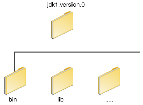

Esta sección explica cómo usar las variables de entorno PATH y CLASSPATH en
Microsoft Windows, Solaris, y Linux. Consulte las instrucciones de intalación incluídas con su instalación del
software del Kit de Desarrollo Java (JDK en ingles) para información actualizada.
Despues de instalar el software, el directorio del KDJ tendrá la estructura mostrada abajo.

El directorio bin contiene tanto el compilador como el lanzador.
Puede ejecutar las aplicaciones Java muy bien sin establecer la variable de entorno PATH. O, puede
opcionalmente establecerla como una convenencia.
Establezca la variable de entorno PATH si quiere ser capaz de ejecutar convenientemente los
ejecutables (javac.exe, java.exe, javadoc.exe, y demás) desde cualquier
directorio sin tener que escribir la ruta de acceso completa del comando. Si no establece la variable
PATH, necesita especificar la ruta de acceso completa al ejecutable cada vez que lo ejecute, tal
como:
C:\Java\jdk1.7.0\bin\javac MyClass.java
La variable de entorno PATH es una serie de directorios separados por puntos y comas
(;). Microsoft Windows busca los programas en los directorios de PATH en orden, de
izquierda a derecha. Debería tener un único directorio bin para el KDJ en la ruta a la vez
(aquellos que siguen al primero son ignorados), así que uno está ya presente, puede actualizar esa entrada en
particular.
Lo siguiente es un ejemplo de una variable de entorno PATH:
C:\Java\jdk1.7.0\bin;C:\Windows\System32\;C:\Windows\;C:\Windows\System32\Wbem
Es útil establecer la variable de entorno PATH permanentemente así que persistirá después del
reinicio. Para hacer un cambio permanente a la variable PATH, use el icono Sistema
en el Panel de Control. El procedimiento preciso varía dependiendo de la versión de Windows:
PATH y selecciónelo. Haga click en Editar. Si
la variable de entorno PATH no existe, haga clieck en Nuevo.
PATH. Haga click en Aceptar.
Cierre todas las ventanas restantes haciendo click en Aceptar.
PATH y selecciónela. Haga click en Editar. Si
la variable de entorno PATH no existe, haga click en Nuevo.
PATH. Haga click en Aceptar.
Cierre todas las ventanas restantes haciendo click en Aceptar.
PATH y selecciónela. Haga click en Editar. Si
la variable de entorno PATH no existe, haga click en Nuevo.
PATH. Haga click en Aceptar.
Cierre las ventanas restantes haciendo click en Aceptar.
PATH similar a lo siguiente cuando
la edita desde el Panel de Control:
%JAVA_HOME%\bin;%SystemRoot%\system32;%SystemRoot%;%SystemRoot%\System32\Wbem
Las variables encerradas en signos de porcentaje (%) son variables de entorno existentes. Si
una de estas variables está listada en la ventana de Variables de Entorno desde el Panel de
Control (tal como JAVA_HOME), entonces puede editar su valor. Si no aparece, entonces es una
variable de entorno especial que el sistema operativo ha definido. Por ejemplo, SystemRoot es
la localización de la carpeta del sistema de Microsoft Windows. Para obtener el valor de una variable de
entorno, introduza lo siguiente en el prompt de la línea de comandos. (Este ejemplo obtiene el valor de
la variable de entorno SystemRoot):
echo %SystemRoot%
Puede ejecutar el KDJ muy bien sin establecer la variable PATH, o puede opcionalmente establecerla
como una convenencia. Sin embargo, debería establecer la variable del path si quiere ser capaz de ejecutar los
ejecutables (javac, java, javadoc, y demás) desde cualquier directorio
sin tener que escribir la ruta de acceso completa del comando. Si no establece la variable PATH,
necesita especificar la ruta de acceso completa al ejecutable cada vez que lo ejecute, tal como:
% /usr/local/jdk1.7.0/bin/javac MyClass.java
Para descubri si el path está establecido apropiadamente, ejecute:
% java -version
Esto imprimirá la versión de la herramienta java, si puede encontrarla. Si la versión es vieja u
obtiene el error java: Comando no encontrado, entonces el path no está establecido apropiadamente.
Para establecer el path permanentemente, establezca el path en su ficherio de inicio.
Para un intérprete de comandos C shell (csh), edite el fichero de inicio
(~/.cshrc):
set path=(/usr/local/jdk1.7.0/bin $path)
Para un intérprete de comandos bash, edite el fichero de inicio (~/.bashrc):
PATH=/usr/local/jdk1.7.0/bin:$PATH
export PATH
Para un intérprete de comandos ksh, el fichero de inicio es nombrado por la variable de entorno,
ENV. Para establecer el path:
PATH=/usr/local/jdk1.7.0/bin:$PATH
export PATH
Para un intérprete de comandos sh, edite el fichero de perfil (~/.profile):
PATH=/usr/local/jdk1.7.0/bin:$PATH
export PATH
Entonces cargue el fichero de inicio y verifique que el path está establecido repitiendo el comando
java:
Para C shell (csh):
% source ~/.cshrc
% java -version
Para ksh, bash, or sh:
% . ./.profile
% java -version
La variable CLASSPATH es una forma de decir a las aplicaciones, incluyendo las herramientas del
KDJ, dónde buscar las clases del usuario. (Las clases que son parte del EEJ, la plataforma del KDJ, y las
extensiones deberían estar definidas de otra forma, tal como la ruta de acceso a la clase de arranque o el
directorio de extensiones).
La forma preferida de especificar la ruta de clases es usando la opción de línea de comandos -cp.
Esto permite que CLASSPATH sea establecida individualmente para cada aplicación sin afectar a otras
aplicaciones.
Establecer CLASSPATH puede ser complicado y debería ser realizado con cuidado.
El valor por defecto de la ruta de clases es ".", lo que significa que sólo el directorio actual es
buscado. Especificar la variable CLASSPATH o la opción de línea de comandos -cp sobreescriben este
valor.
Para comprobar si CLASSPATH está establecida en Microsoft Windows NT/2000/XP, ejecute lo siguiente:
C:> echo %CLASSPATH%
En Solaris o Linux, ejecute lo siguiente:
% echo $CLASSPATH
Si CLASSPATH no está establecido obtendrá un error CLASSPATH: Variable no definida (Solaris
o Linux) o simplemente %CLASSPATH% (Microsoft Windows NT/2000/XP).
Para modificar CLASSPATH, use el mismo procedimiento que usó para la variable PATH.
Los comodines en la ruta de clases le permite incluir un directorio entero de ficheros .jar en la
ruta de clases sin nombrarlos explícitamente de forma individual. Para obtener más información, incluyendo una
explicación de los comodines de la ruta de clases, y una descripción detallada de como limpiar la variable de
entorno CLASSPATH, vea la nota técnica
Estableciendo la Ruta de Clases.